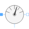

RelativeSensorElementaryElementary partial voltage / current sensor |

|
Information
This information is part of the Modelica Standard Library maintained by the Modelica Association.
The relative sensor partial model relies on the TwoPinElementary to measure the complex voltage or current. Additionally this model contains a proper icon and a definition of the angular velocity.
See also
AbsoluteSensor, VoltageSensor, CurrentSensor, PowerSensor, Polyphase.Interfaces.AbsoluteSensor, Polyphase.Interfaces.RelativeSensorElementary
Connectors (2)
| pin_p |
Type: PositivePin Description: Positive quasi-static single-phase pin |
|
|---|---|---|
| pin_n |
Type: NegativePin Description: Negative quasi-static single-phase pin |
Extended by (2)
|
Modelica.Electrical.QuasiStatic.SinglePhase.Sensors Current sensor |
|
|
Modelica.Electrical.QuasiStatic.SinglePhase.Sensors Voltage sensor |